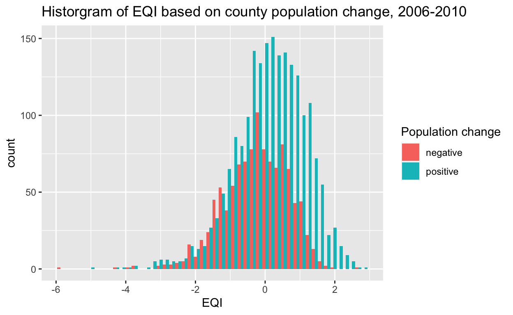
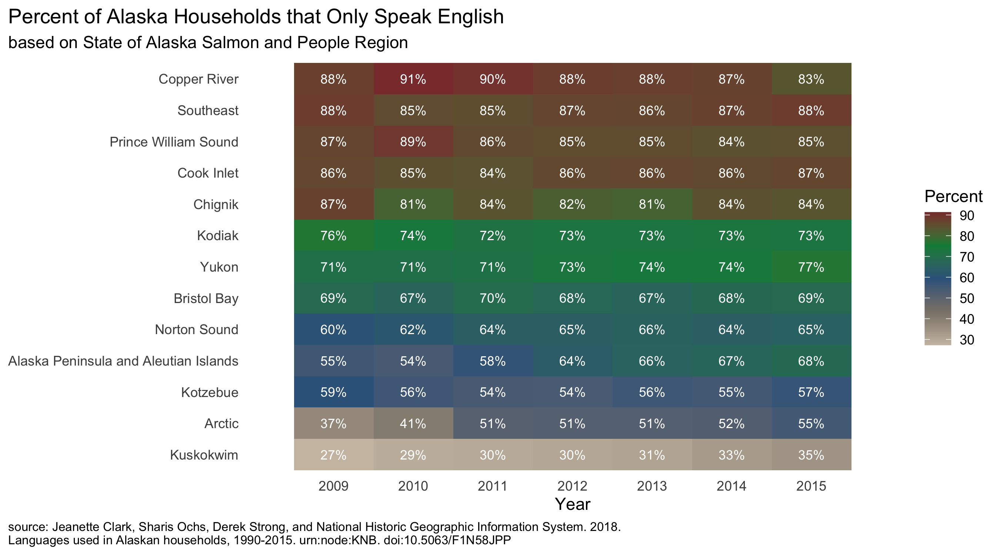
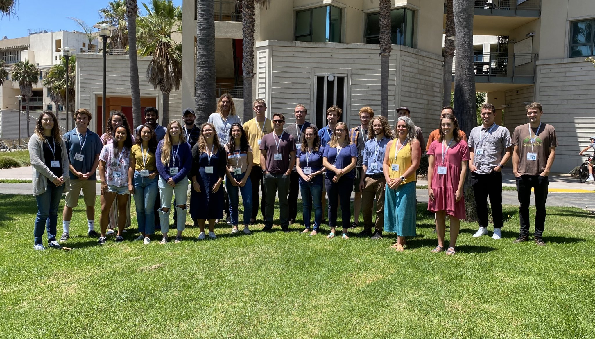

Communicating climate and water resource data to a wider audience
A modern update to the Gantt chart

Population Change vs. the EPA Environmental Quality Index (EQI): a statistical analysis

Visualization of Alaska household languages data
If you are new to coding, what first steps should you take?

life beyond excel spreadsheets